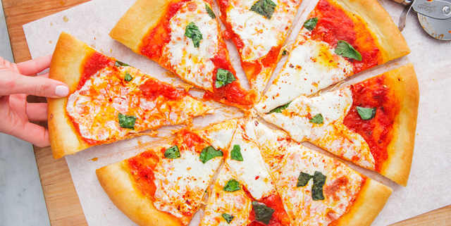

Pizza

Description
Mamma mia! It's a wonderful thing to eat-a-the-pizza!
Hold on to your seats ladies and gentlement because today we will be
making a dish that has been the controversy of Queens and mobsters all the
way to drunk sports fans grabbing a bite. That's right, it's pizza time.
Ingredients
- Dough
- Mozarella
- Tomato Paste
- Those Soft Massaging Hands of Yours
Steps
- Take your beautifully soft hands and artisanally massage the dough in a circle
- Spread the tomato sauce with care just as the calm river in Pocahontas did
- Sprinkle the mozarella Salt-Bae style like your life depended on it
- Bake in high heat oven for 5-15min and voila, it's a masterpiece!